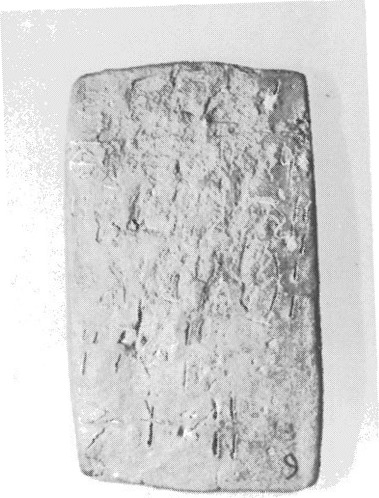
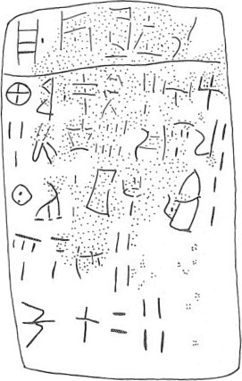

| side.line | statement | logogram | number | fraction |
| a.1 | SA-RO | • TE • VINa • | ||
| a.2 | PA-DE • | 5 | J E | |
| a.2-3 | *306-TU | 10 | ||
| a.3 | DI-NA-U | 4 | ||
| a.3-4 | QE-PU | 2 | ||
| a.4 | *324-DI-RA | 2 | J | |
| a.4-5 | TA-I-*123 | 2 | J | |
| a.5-6 | A-RU | 4 | E | |
| a.6 | KU-RO | 31 | J E | |
| b.1 | PA 3 • | |||
| b.1 | WA - JA - PI -[ ] | |||
| ________________________________________________________________________________ | ||||
| b.2 | KA-*305 • | |||
| b.2 | PA - DE | 3 | ||
| b.2-3 | A - SI | 3 | ||
| b.3 | *306- TU | 8 | ||
| b.3 | * 324 -DI-RA | 2 | ||
| b.4 | QE-PU | 2 | ||
| b.4 | TA- I -*123 | 2 | ||
| b.5 | DI-NA- U | 4 | ||
| b.6 | KU-RO | 24 | ||